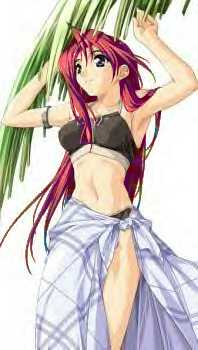

Destiny

Name: Destiny
Age: 17
Race: Saiyan
Alignment(good or evil) : Neutral
Siblings: None known
Marital Status: Single and looking
Children: None
Moves(newbies can only chose 5): Burning Attack, Final Kamehameha, Fusion Dance, Dragon Fist, Spirit Flame.
Transformations: Practically any animal
Level (will start out as 50,000 or less): 45,000
Extra: Destiny is a saiyan who doesn't know her past. For as long as she can remember she lived on earth on her own. She lived in the mountain forests so nobody found or bothered her and she grew up using her powers. She taught herself most things until she stumbled upon a town. There she went to school for a few years but she grew tired of it but finished year 10 then she went back to the mountains. Her powers grew and grew until she turned SSJ1. At first she was quite scared of her new power but she eventual got use to it. At one point she met Kami and Mr.Popo. She trained in the Hyperbolic Time Chamber and her power level shot up in there too. After a while she met some people who told ehr about the Z Warriors and that some of them could turn gold. At once Destiny went to find them. She found them but she didn't show herself. She saw how they went SSJ and sometimes she copied them. When Cell came she watched the whole thing and wanted to do something but she knew that she wasn't strong enough so she watched far off in the distance. She didn't know how but she had the great hearing that piccolo had and she could hear everything that was going on. When buu came she didn't know about him and she watched piccolo and krillin get turned to stone and she didn't want to get into that fight because she knew she couldn't do anything either while seeing debura. Later on she learned the fusion dance by copying Goten and Trunks in training and but she didn't have anyone to try it with so she doesn't know if it really works. She eventually learnt the Final Kamehameha from watching goku and the burning attack from future trunks.
AIM Screen Name(s): SSJDestiny22@aol.com